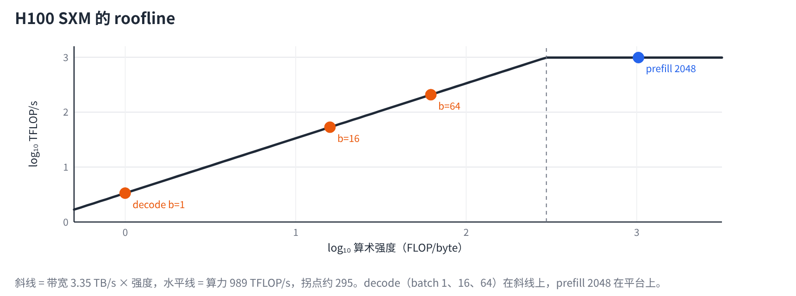
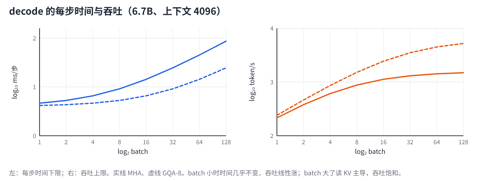
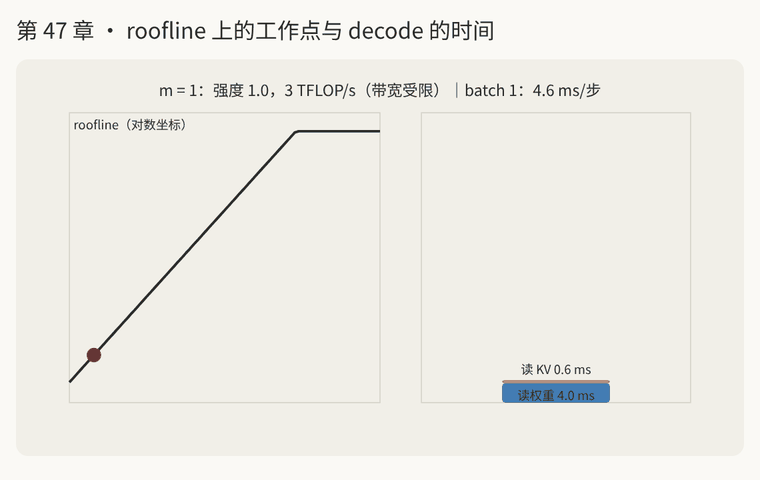

第 47 章 · 推理成本模型：roofline 与算术强度、prefill vs decode、KV cache、批处理与延迟
本地运行
git clone https://github.com/wikieden/math-and-eval-stats
cd math-and-eval-stats/code/notebooks
pip install jupyterlab torch numpy
jupyter lab ch47_inference_cost.ipynb也可以下载后直接用 VS Code 打开 .ipynb 运行。需要 GPU 的章节在 Colab 里选「代码执行程序 → 更改运行时类型 → GPU」。
本章回答：一个模型推理时到底是“算得慢”还是“搬得慢”？为什么生成第一个 token（prefill）和后面一个个生成（decode）的瓶颈完全不同？KV cache 有多大，GQA 省了多少？batch 开大为什么吞吐上去、单个请求的延迟却变长？
讲解日期：2026-11-25 · 上一章：第 46 章 分布式训练账本 · 下一章：第 48 章 高效注意力与序列模型
对应原文：LLM Inference Unveiled（Yuan 2024）math-and-eval-stats/materials/text/papers/llm-inference-roofline-survey-2402.16363.txt（§2.2 Roofline 模型 L263，拐点与受限区 L362）；vLLM PagedAttentionllm-full-stack/materials/text/papers/vllm-pagedattention-2309.06180.txt（§2 KV cache 占用）；GQAllm-full-stack/materials/text/papers/gqa-2305.13245.txt；MQAllm-full-stack/materials/text/papers/mqa-1911.02150.txt
本章缩写：AI = Arithmetic Intensity（算术强度：每搬 1 字节做多少次浮点运算）；prefill = 处理整段提示词；decode = 逐个生成新 token；KV cache = 缓存的键、值；MHA / MQA / GQA = Multi-Head / Multi-Query / Grouped-Query Attention（多头 / 多查询 / 分组查询注意力）；TTFT = Time To First Token（首 token 延迟）；TPOT = Time Per Output Token（每个输出 token 的时间）。全部缩写见 附录 · 缩写与术语表
讲解
第一步：roofline：算术强度决定瓶颈（2026-11-25）
类比：厨房出菜速度。 灶台再多（算力），食材从仓库运来的速度（带宽）跟不上也白搭。每运一筐食材能做几道菜（算术强度）决定卡在哪。
拐点 = 峰值算力 / 带宽（Yuan 2024 §2.2，L263、L362）。H100 SXM：989 TFLOP/s ÷ 3.35 TB/s ≈ 295 FLOP/byte。
一个 (m×k)·(k×n) 的矩阵乘：2mkn 次运算，至少读写 (mk + kn + mn) 个元素。
例子（一次处理 m 个 token、过一个 4096×4096 的线性层，bf16）：
| token 数 m | 算术强度 | 可达 TFLOP/s | 受限于 |
|---|---|---|---|
| 1 | 1.0 | 3 | 带宽 |
| 16 | 15.9 | 53 | 带宽 |
| 256 | 227.6 | 762 | 带宽 |
| 2048 | 1024 | 989 | 算力 |
m 远小于 k、n 时，算术强度 ≈ m：权重读一遍只用了 m 次。
一句话：可达性能 = min(峰值, 强度 × 带宽)；线性层的强度约等于一次一起处理的 token 数，H100 要 ~300 个才算力受限。
第二步：prefill vs decode（2026-11-25）
- prefill：整段提示词（比如 2048 个 token）一起过模型，每个线性层的强度约 1000：算力受限，决定首 token 延迟（TTFT）；
- decode：每步每个请求只有 1 个新 token，batch = 1 时强度约 1：带宽受限，每步都要把全部权重从显存读一遍，决定每 token 时间（TPOT）。
同一个模型、同一张卡，两个阶段的瓶颈完全不同，所以有 prefill / decode 分离部署（不同机器、不同并行方式）和 chunked prefill（把长 prefill 切块和 decode 混在一个 batch 里）。

图 47-1 · 横轴算术强度（对数），纵轴可达 TFLOP/s（对数）；斜线是带宽上限、水平线是算力上限，拐点 295；decode（batch 1、16、64）落在斜线上，prefill 2048 落在水平线上一句话：prefill 算力受限、决定 TTFT；decode 带宽受限、决定 TPOT；两者常分开优化甚至分开部署。
第三步：KV cache 有多大（2026-11-25）
decode 时每个已生成的 token 的 K、V 都要留着：
例子（32 层、每头 128 维、bf16）：
| 注意力 | KV 头数 | 每 token | 4096 token 一个请求 |
|---|---|---|---|
| MHA | 32 | 512 KiB | 2.00 GiB |
| GQA-8 | 8 | 128 KiB | 0.50 GiB |
| MQA | 1 | 16 KiB | 0.06 GiB |
7B 模型的权重才 13.4 GB，32 个 4K 上下文的 MHA 请求就要 64 GiB KV cache：并发数常常被 KV cache 卡住而不是被算力卡住。GQA 让多个查询头共用一组 KV（GQA 论文），MLA 存低秩潜向量（第 48 章）；vLLM 的分页管理解决的是碎片问题（§2）。
一句话：KV cache 每 token = 2·层数·KV 头数·头维·字节，常常比权重还大；GQA / MQA / MLA 都在减 KV 头数或维度。
第四步：批处理：吞吐与延迟的权衡（2026-11-25）
decode 一步的时间下限（带宽受限）= (读一遍权重 + 读这批请求的 KV cache) / 带宽：
例子（6.7B、上下文 4096、MHA）：
| batch | 每步时间下限 | 吞吐上限 |
|---|---|---|
| 1 | 4.6 ms | 215 token/s |
| 8 | 9.1 ms | 876 token/s |
| 64 | 45.0 ms | 1421 token/s |
| 64（GQA-8） | 14.3 ms | — |

图 47-2 · 横轴 batch（对数）；蓝：每步时间下限（右轴，ms），橙：吞吐上限（左轴，token/s）；实线 MHA、虚线 GQA-8batch 小时权重读取被摊薄，吞吐几乎线性涨、延迟几乎不变；batch 大了以后每个请求自己的 KV 读取占主导，延迟线性变长、吞吐饱和。GQA 把 KV 那一项砍到 1/4，同样的延迟能撑更大的 batch。
场景代码：vLLM 里控制这几个旋钮（真实参数名；本书环境没装 vLLM，没跑过）：
llm = LLM(model=name, max_num_seqs=64, # 同时 decode 的请求数（batch 上限）
gpu_memory_utilization=0.9, # 留给 KV cache 的显存比例
enable_chunked_prefill=True, max_num_batched_tokens=8192)
一句话：decode 每步 ≥ (权重 + 这批的 KV) / 带宽；batch 大吞吐高、单请求延迟长，KV 小（GQA）才能把 batch 开大。
动画演示：roofline 上的工作点

可交互版：animations/47-inference-cost.html（滑块调一次处理的 token 数和 batch；下拉切换 MHA / GQA）。
怎么看：
- 左边是 roofline，红点是当前工作点：token 数从 1 拖到 2048，红点沿斜线爬到拐点再走上平台（第一、二步）；
- 右边是 decode 一步的时间拆成“读权重”（蓝）和“读 KV”（橙）两段：batch 变大，橙色段越来越长；切到 GQA，橙色段缩短到 1/4（第三、四步）。
练习与作答记录
题 1（第一步）：一张卡峰值 400 TFLOP/s、带宽 2 TB/s，拐点是多少？batch 32 的 decode 在这张卡上是算力还是带宽受限？
作答：（待作答）
题 2（第三步）：80 层、8 个 KV 头、每头 128 维、bf16 的模型，每 token 的 KV cache 多大？128K 上下文的一个请求呢？
作答：（待作答）
题 3（第四步）：一个 14 GB 权重的模型，带宽 3.35 TB/s，忽略 KV，batch 1 和 batch 16 的 decode 吞吐上限各是多少 token/s？
作答：（待作答）
口诀
性能取峰值和强度乘带宽的小者，拐点约三百；
线性层强度约等于一起处理的 token 数；
prefill 卡算力定首字，decode 卡带宽定每字；
KV 每 token 二乘层乘头乘维乘字节；
batch 摊薄权重读取，KV 小才开得大。
本章复习卡片
ST154（roofline、算术强度与拐点）、ST155（prefill vs decode 的瓶颈；KV cache 大小公式）、ST156（decode 一步的时间下限与批处理权衡）。练习做完后，按答错、卡住的地方补上。
附录 · 延伸阅读
留给以后深入学习用，不影响本章主线。★ 是建议先读的。
推荐阅读
| 读什么 | 读哪里 | 读它为了什么 |
|---|---|---|
| ★ LLM Inference Unveiled（Yuan 2024） | §2–3（L263 起） | roofline 分析推理的各个阶段 |
| ★ 《从约束推导 AI Infra》第 4 章 关键数字、第 45 章 批处理、第 46 章 KV cache | 全章 | 系统视角的推理成本 |
| vLLM PagedAttention（Kwon 2023） | §2–4 | KV cache 的内存管理 |
| GQA（Ainslie 2023） | §2 | 分组查询注意力 |
| 《CUDA 从线程到 Tensor Core》 | roofline 章节 | 单个 kernel 的 roofline 分析 |
数学原理
- roofline：P = min(π, I·β)，π 是峰值算力，β 是带宽，I 是算术强度。
- 线性层的强度：2mkn/(2(mk + kn + mn))；m ≪ k, n 时 ≈ m。
- decode 的下限：每步至少读一遍所有权重（2Ψ 字节）和本批所有请求的 KV；带宽受限时时间 = 字节数 / 带宽。
- 吞吐 = batch / 每步时间：权重项摊薄时近似线性增长，KV 项主导时饱和。
公式清单
| 公式 | 意思 |
|---|---|
| 可达 = min(峰值, I × 带宽) | roofline |
| 拐点 = 峰值 / 带宽 | H100 约 295 FLOP/byte |
| KV/token = 2·L·n_kv·d_head·字节 | KV cache |
| \(t_{step} \ge (2\Psi + B\cdot\text{ctx}\cdot\text{KV})/\text{带宽}\) | decode 一步下限 |
代码对照：把本章的数字用代码算一遍
代码在仓库本地
math-and-eval-stats/solutions/chapter-code/ch47_inference_cost.py，配套测试tests/test_ch47.py：
bash cd math-and-eval-stats/solutions/chapter-code uv run python ch47_inference_cost.py uv run pytest tests/test_ch47.py
讲义 ↔ 代码：
| 讲义 | 公式 | 写法 | 跑出来 |
|---|---|---|---|
| 第一步 拐点 | 峰值/带宽 | ridge() |
295 |
| 第一步 强度 | 2mkn/… | matmul_intensity(m, 4096, 4096) |
1.0 … 1024 |
| 第三步 KV | 2·L·n_kv·d·B | kv_bytes_per_token(8) |
128 KiB |
| 第四步 decode | (权重 + KV)/带宽 | decode_floor_ms(64, 4096) |
45.0 ms |
关键几行：
return 2 * m * k * n / (bytes_per * (m * k + k * n + m * n)) # 矩阵乘的算术强度
return 2 * layers * kv_heads * hdim * bytes_per # 每 token 的 KV cache
return (2 * PARAMS + batch * ctx * kv_bytes_per_token(kv_heads)) / BW * 1e3 # decode 一步下限（ms）
代码里才看得到的 3 件事：
- 峰值用的是稠密 bf16 的 989 TFLOP/s：厂商标的 1979 是 2:4 稀疏的数，实际能跑到的稠密算力还要再打七八折。
- decode 下限只算了读：没算注意力的计算、kernel 启动开销和通信，真实 TPOT 一般是下限的 1.5–3 倍。
- 只有一组配置：给任意模型（MHA / GQA / MLA）算 KV、判断 prefill / decode 受什么限制的计算器留给自己做（里程碑 ME-M29）。
自己改一改（不影响练习答案）：
- 把
PARAMS换成 70e9、LAYERS换成 80，batch 1 的 decode 下限是多少？ - 把 KV cache 量化成 int8（每元素 1 字节），batch 64 的 decode 下限变成多少？